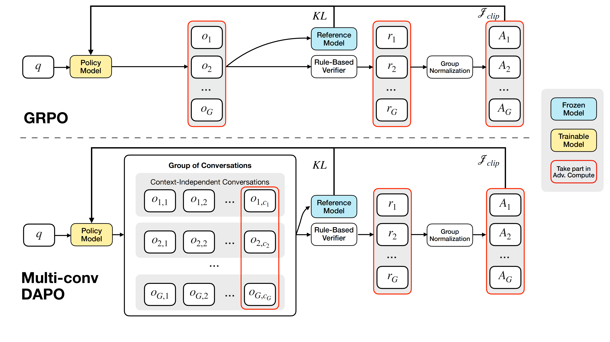
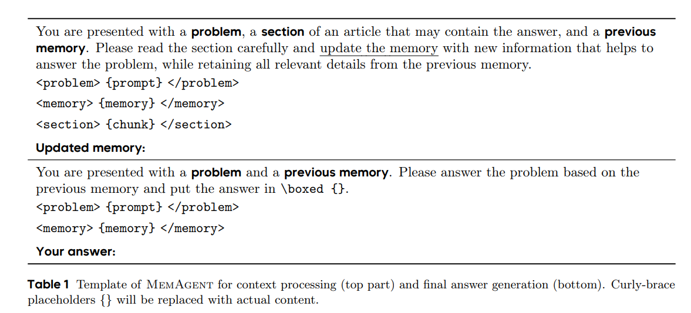

1ByteDance Seed1字节跳动 Seed 2Institute for AI Industry Research (AIR), Tsinghua University2清华大学智能产业研究院（AIR） 3SIA-Lab of Tsinghua AIR and ByteDance Seed3清华大学 AIR 与字节跳动 Seed 联合实验室 SIA-Lab
We propose a novel long-context processing framework — MemAgent, which directly optimizes long-context tasks through end-to-end Reinforcement Learning without altering the underlying model architecture. MemAgent has demonstrated superb long-context capabilities, being able to extrapolate from an 8K context trained on 32K text to a 3.5M QA task with performance loss < 5% and achieves 95%+ accuracy in 512K RULER test.
Novel memory mechanism: The agent reads text in segments and efficiently updates memory through an overwriting strategy. This design enables the model to process arbitrarily long inputs within a fixed context window, fundamentally overcoming the window length limitations of traditional Transformer architectures.
O(n) complexity: By decoupling computation from text length, the complexity of processing long texts is transformed from quadratic growth to linear growth.
RL-driven extrapolation: We enhance the DAPO algorithm to support multi-turn training over context-independent conversations. Based on this, the trained model exhibits unprecedented extrapolation performance.
Through a simple yet effective design, we demonstrate the first truly trainable memory mechanism powered by reinforcement learning, showcasing the vast potential of using RL to optimize agent workflows.
Inspired by human behavioral patterns when processing long texts, we propose MemAgent, a novel approach for long-context processing that requires no modification to model architecture:
| Equipping LLMs with dynamically updating "Memory Modules".
MemAgent introduces a fixed-length auxiliary memory panel that enables the model to process long texts in a segmented manner, actively updating the memory state after each segment to achieve a novel "local processing + global fusion" workflow. This memory module continuously updates dynamically during inference and, after all segments are processed, assists in generating the final output by aggregating critical information stored in memory.
We employ Reinforcement Learning from Verifiable Rewards (RLVR), which currently demonstrates exceptional performance in the reasoning domain, to train MemAgent, rather than simply performing fine-tuning or instruction engineering. To this end, we extend the existing DAPO algorithm to further support end-to-end optimization of Agent Workflows with multi-turn context-independent conversations.

Comparison between vanilla GRPO and Multi-Conv DAPO

Template of MemAgent
Multi-Conv Training Mechanism: For each input sample, the model generates multiple responses, where each response cannot be obtained by simply concatenating previous generation trajectories but has independent inputs, differing from the approach in tool calling that uses multi-turn concatenated trajectories as input.
Reward Computation: The final answer is extracted based from the last turn of conversation. The advantage is computed through rule-based outcome reward and group normalization and then be allocated to all associated conversations.
This method requires attention computation over all previously generated tokens, leading to a cost of $O(N^2)$.
这种方法需要对所有先前生成的token计算注意力，导致计算成本随序列长度呈二次方增长。
Rethinking MemAgent from LM Perspectives
To get a deeper sense of the MemAgent design, we propose to re-think language-model factorization in the following fashion.
从语言模型的角度重新理解 MemAgent
为了进一步地理解 MemAgent的设计，我们考虑下列对语言模型的生成过程的新建模方式。
Specifically, the input sequence is segmented into K contiguous chunks \((c^1, c^2, \ldots, c^K)\), with each chunk containing at most \(C\) tokens.
Let \(m^{1:K-1}\) denoteds the latent memory variables and initial state \(m^0 = \emptyset\), the autoregressive factorization is reformulated as a series of chunk processing and reading and writing to the memory:
The new modeling bounds the context window of each conversation within a fixed size, yielding a $O(N)$ computational cost.
新的建模方式将每次对话的上下文窗口大小限制在常数范围内，最终的计算复杂度为 $O(N)$。
Experiments实验分析
Main Results
主实验结果
Baseline Models: Experimental results demonstrate that existing models exhibit significant performance degradation when confronted with ultra-long contexts.
DS-distill series: Performance within context rapidly decays to extremely low levels as length increases, becoming essentially ineffective beyond the context window due to information loss.
QwenLong-L1: With post-training length of 60K, performance decline within this range is approximately 10%. While the degradation from 64K to 112K exceeds 28%, despite remaining within the context window length.
Qwen2.5-Instruct-1M series: Performance decline within context is gradual, but performance drops to zero at 896K testing, still within the 1M context length range.
To validate the necessity of using reinforcement learning for Memory Agent training, we conduct comprehensive ablation experiments.
Base Model: The original model exhibits severe performance degradation as context length increases, particularly after 112K where inputs are truncated due to context window limitations, making effective extrapolation nearly impossible.
MemAgent (w/o RL): Compared to the base model, it demonstrates better performance and maintains reasonable capability on tasks exceeding the context length, but still experiences overall performance decline as input length increases.
RL-MemAgent:The RL-trained MemAgent maintains near-lossless extrapolation capability across all context lengths.
RULER is the current standard test set for long-text extrapolation capability research, with the core advantage of controllable length generation tasks. We utilize synthetic QA data based on HotpotQA for training.
Locating key needles in ultra-long texts, including 8 types of interference variants.
在超长文本中定位关键needle，包含8类干扰变体。
Variable Tracking(VT)变量追踪（VT）
Simulating program analysis scenarios, tracking variable references and assignment relationships.
模拟程序分析场景，追踪变量引用和赋值关系。
Aggregation(Agg)聚合任务（Agg）
Aggregating scattered information to evaluate the model's ability to grasp global features.
汇总分散信息，评估模型对全局特征的掌握能力。
Question Answering (QA)问答任务（QA）
Conducting multi-hop complex reasoning to test the model's contextual understanding and QA capabilities.
进行多跳复杂推理，测试模型上下文理解与问答能力。
OOD Experiments: We test out model in 10 untrained tasks and QA task synthesized from a new dataset, SQuAD. We use heatmaps to visualize the performance of different models across different length ranges and task types. Our model achieves a SOTA in this two OOD tests and the 14B model achieves 95%+ average score over 10 OOD RULER tests in 512K context length.
In this work, we propose a novel framework for long-context processing, with contributions spanning three key dimensions:
1
Architectural Innovation: We introduce an innovative mechanism that enables large language models to process arbitrarily long input sequences within a limited context window and with linear-time complexity, fundamentally addressing the computational bottlenecks faced by traditional long-context methods.
Agent Training Methodology: We design a complete agent workflow to implement this mechanism, and develop an end-to-end training framework based on Multi-conv RL, enabling the agent to learn how to store and retrieve relevant information effectively.
Extrapolation Performance: Through extensive empirical evaluation, we demonstrate that our Multi-conv RL method allows models to extrapolate far beyond their training context length with almost lossless performance during testing, substantially expanding the capability frontier of current long-context LLM systems.
We implement a basic Multi-Conv DAPO training code based on verl, which defines a unified interface for Multi-Conv workflow, dataset, and configuration items.
我们进一步实现了一个纯异步的训练框架，使用统一接口做到了“Agent as a function”，仅需定义一个函数，即可实现任意agent workflow。
统一API接口： 使用 OpenAI API 风格的接口调用LLM，支持 多轮工具调用、多轮独立对话，消除传统的大量冗余代码地狱。
We further implement a fully asynchronous training framework that achieves "Agent as a Function" through a unified interface, requiring only the definition of a single function to implement arbitrary agent workflows.
Fully Asynchronous Pipeline: GPU and CPU resources are decoupled. AsyncLLMEngine handles multi-node inference while Ray Worker manages a persistent process pool, and task scheduling is completed via async coroutines.
Unified API Interface: Unified API Interface with OpenAI-style API, supporting multi-turn tool use, multi-agent parallelism, and multi-task training, eliminating traditional state machine boilerplate.
📝 Citation📝 引用
If you find this work useful, please cite our paper:
如果您发现这项工作有用，请引用我们的论文：
@article{memagent,
title={MemAgent: Reshaping Long-Context LLM with Multi-Conv RL-based Memory Agent},
author={Yu, Hongli and Chen, Tinghong and Feng, Jiangtao and Chen, Jiangjie and Dai, Weinan and Yu, Qiying and others},
journal={arXiv preprint arXiv:2507.02259},
year={2025}
}